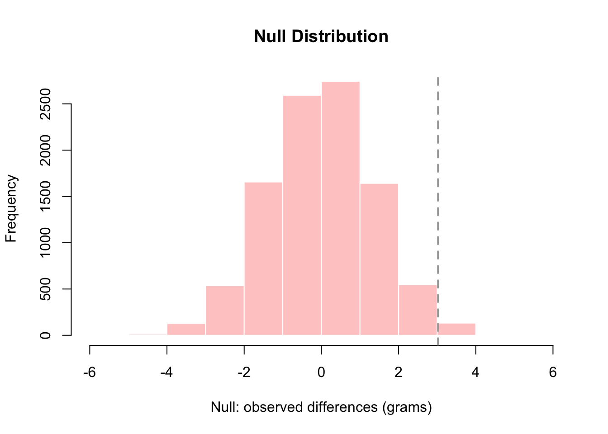

qt(.975,34)[1] 2.0322451.8 - 2.03*(0.962)[1] -0.152861.8 + 2.03*(0.962)[1] 3.75286A common scenario in scientific research involves comparison of two or more samples from different populations and it is of interest to compare their means or standard deviations.
Consider two indpendent random samples of \(n_{1}\) and \(n_{2}\) observations with sample means \(\bar{x}_{1}\) and \(\bar{x}_{2}\) and sample standard deviations \(s_{1}\) and \(s_{2}\) respectively. Then the standard error of \(\bar{X}_{1}-\bar{X}_{2}\) is:
Unpooled standard error (Welch) \[ \mathrm{SE}\!\left(\bar X_1-\bar X_2\right) = \sqrt{\frac{s_1^{2}}{n_1}+\frac{s_2^{2}}{n_2}} \]
If you believe that the two populations have the same standard deviations (\(\sigma_1=\sigma_2\)) then you can use the pooled SE.
% Pooled standard error for difference in two sample means (equal variances): \[ s_p^2 = \frac{(n_1-1)s_1^2 + (n_2-1)s_2^2}{n_1+n_2-2} \]
\[ \mathrm{SE}_{\text{pooled}}\!\left(\bar X_1-\bar X_2\right) = s_p \sqrt{\frac{1}{n_1}+\frac{1}{n_2}} \]
Difference in sample means: \[ \hat D=\bar{x}_T-\bar{x}_C = 17.0-15.2 = 1.8\ \text{cm}. \]
Unpooled standard error: \[ \mathrm{SE} =\sqrt{\frac{s_T^2}{n_T}+\frac{s_C^2}{n_C}} =\sqrt{\frac{3.1^2}{18}+\frac{2.8^2}{20}} \approx 0.962. \]
We got a point estimate \(\bar{x}_{1}-\bar{x}_{2}\) and standard errors. Let’s build confidence intervals for the difference in means!
\[ \hat D \pm t_{0.975,\ \mathrm{df}}\ \mathrm{SE}. \] Degrees of freedom: \[ \mathrm{df} = \frac{\left(\frac{s_T^2}{n_T}+\frac{s_C^2}{n_C}\right)^2} {\frac{\left(\frac{s_T^2}{n_T}\right)^2}{n_T-1} + \frac{\left(\frac{s_C^2}{n_C}\right)^2}{n_C-1}} \approx 34. \]
Using \(t_{0.975,34} \approx 2.03\):
qt(.975,34)[1] 2.0322451.8 - 2.03*(0.962)[1] -0.152861.8 + 2.03*(0.962)[1] 3.75286\[ 1.8 \pm 2.03(0.962) = 1.8 \pm 1.95, \]
so the 95% CI is: \[ (-0.15,\ 3.75)\ \text{cm}. \]
What if we believe we got samples from the same population?
The hypothesis is that the two samples actually came from the same population. The labels we applied – “treatment” vs “control” – were arbitrary and could thus be arbitrarily reassigned without problems.
Results can be retrieved from R as follows:
dir <- "https://raw.githubusercontent.com/genomicsclass/dagdata/master/inst/extdata/"
filename <- "femaleMiceWeights.csv"
url <- paste0(dir, filename)
dat <- read.csv(url)
head(dat) Diet Bodyweight
1 chow 21.51
2 chow 28.14
3 chow 24.04
4 chow 23.45
5 chow 23.68
6 chow 19.79head(dat) Diet Bodyweight
1 chow 21.51
2 chow 28.14
3 chow 24.04
4 chow 23.45
5 chow 23.68
6 chow 19.79## Note that head only shows the first 6/24 observations in the dataset.
## Lightest mouse:
dat[which.min(dat$Bodyweight), ] Diet Bodyweight
6 chow 19.79## Heaviest mouse
dat[which.max(dat$Bodyweight), ] Diet Bodyweight
21 hf 34.02## Use 'View(dat)' in R to see the entire dataset. Notice that there is variability in body weight across the mice. For instance, mouse 6 was the lightest (19.79 grams) and was on the chow diet, while mouse 21 was the heaviest (34.02 grams) and was on the high-fat (HF) diet. However, these are only individual observations. To better understand patterns in the data, we can calculate the average weight within each group.
library(dplyr)
control <- filter(dat, Diet=="chow") %>% select(Bodyweight) %>% unlist
treatment <- filter(dat, Diet=="hf") %>% select(Bodyweight) %>% unlist
print(mean(control))[1] 23.81333print(mean(treatment))[1] 26.83417obsdiff <- mean(treatment) - mean(control)
print(obsdiff)[1] 3.020833In this experiment, we observe that, on average, mice on the high-fat diet are about 10% heavier than those on the chow diet. However, this result is based on a sample drawn from a larger population of mice. If the experiment were repeated with a new sample of 24 mice, randomly assigned to each diet, we would likely obtain a different average. In fact, each repetition of the experiment would yield a different value.
To illustrate this, suppose we had access to the weights of the entire population of control female mice. In practice, this is rarely the case, as we typically observe only samples and rely on statistical methods to make inferences about population characteristics. For illustrative purposes, assume the following dataset represents the full population of female mice. We can then draw multiple random samples of 12 mice from this population and calculate the average for each sample.
## Download the dataset directly from: https://raw.githubusercontent.com/genomicsclass/dagdata/master/inst/extdata/femaleControlsPopulation.csv
population <- read.csv("data/femaleControlsPopulation.csv")
## Use unlist to turn it into a numeric vector
population <- unlist(population)
# Mean of the 'total' population
mean(population)[1] 23.89338# Sample 12 mice three times to see if the average changes.
control <- sample(population, 12)
mean(control)[1] 22.9225control <- sample(population, 12)
mean(control)[1] 24.15control <- sample(population, 12)
mean(control)[1] 23.59833See how the average changes across samples, and that each differs from the average of the ‘total’ population. Therefore, repeating this experiment is useful, as it provides additional information about the distribution of this random variable.
In the previous section, we saw that the true characteristics of a population are rarely known. Instead, we use statistical methods to infer or approximate these characteristics based on samples drawn from that population. In the case of the mice experiment, scientists seek to determine whether applying a different diet leads to increased body weight. Based on their analysis, they conclude the following (Sörhede Winzell and Ahrén 2004):
‘Body weight was higher in mice fed the high-fat diet already after the first week, due to higher dietary intake in combination with lower metabolic efficiency.’
This conclusion is based on comparing the average body weight between the control and treatment groups. However, we have also seen that the average is a random variable—it changes each time we draw a different sample from the population. This raises an important question: should we fully trust the scientists’ conclusion? How do we know that the observed difference is truly due to the diet? What would happen if all 24 mice were given the same diet—would we still observe a large difference?
Statistics addresses this scenario through the concept of the null hypothesis. It is called “null” because it represents the possibility that there is no real difference between groups.
We can simulate this idea in by using the full dataset of control mice, which we previously treated as the ‘population.’ Assuming that diet has no effect, we can repeatedly draw random samples of 24 control mice, assign them (artificially) to two groups of 12, and calculate the difference in average weight between these groups. This allows us to observe how much variation can arise purely by chance and test the hypothesis:
Null hypothesis: \(H_0:\mu_1=\mu_2\) (Diet has no effect)
Alternative hypothesis: \(H_A:\mu_1 \neq \mu_2\)
## 12 control mice
control <- sample(population, 12)
## Another 12 control mice that we act as if they were not
treatment <- sample(population, 12)
print(mean(treatment) - mean(control))[1] 0.8225## Now, let's do it 10,000 times (using a 'for-loop')
n <- 10000
null <- vector("numeric", n)
for (i in 1:n){
control <- sample(population, 12)
treatment <- sample(population, 12)
null[i] <- mean(treatment) - mean(control)
}The values under the null represent what we call the null distribution. We can now compare the mean of the null distribution with the difference observed by the scientists in the original experiment (obsdiff = 3.020833). For example, what percentage of the 10,000 sample values in this distribution are greater than 3.020833?
mean(null >= obsdiff) * 100[1] 1.3hist(null,
mai = "Null Distribution",
xlab = "Null: observed differences (grams)",
col = "#FFCCCC",
border = "white")
# Vertical dashed line at observed value
abline(v = 3.020833,
col = "darkgrey",
lwd = 2,
lty = 2)
That is, based on the 10,000 simulations assuming no diet effect, we observe a difference as large as the one in the original experiment only 1.3% of the time. In statistics, this is what is known as a p-value.
Definition: The P-value for a hypothesis test is the probability, computed under the condition that the null hypothesis is true, of the test statistic being at least as extreme as the value of the test statistic that was actually obtained.
Corollaries to definition:
The P-value is a measure of compatibility between the data and \(H_0\) and thus measures \(H_A\).
A large P-value (close to 1) indicates the data are compatible with \(H_0\).
A small P-value (close to 0) indicates the data are incompatible with \(H_0\).
In the previous example we were able to use simulation to estimate the p-value. In many situations, we will not be able to do this. An alternative is the t-test with test statistic:
\[t=\frac{(\bar{x}_{1}-\bar{x}_{2})-0}{SE_{(\bar{x}_{1}-\bar{x}_{2})}} \]
print(mean(control))[1] 24.21167print(mean(treatment))[1] 22.8575obsdiff <- mean(treatment) - mean(control)
print(obsdiff)[1] -1.354167part1<-(sd(control)^2)/length(control)
part2<-(sd(treatment)^2)/length(treatment)
se<-sqrt(part1+part2)
tval<-obsdiff/se
tval[1] -0.9337762df<-((part1+part2)^2)/(part1^2/(length(control)-1)+part2^2/(length(treatment)-1))
df[1] 18.29132Let’s compute the p-value
2*pt(tval,df)[1] 0.3625833We can compare our calculations:
t.test(control, treatment)
Welch Two Sample t-test
data: control and treatment
t = 0.93378, df = 18.291, p-value = 0.3626
alternative hypothesis: true difference in means is not equal to 0
95 percent confidence interval:
-1.689126 4.397459
sample estimates:
mean of x mean of y
24.21167 22.85750 The data is compatible with the hypothesis. We do not reject the null hypothesis of equality in means.